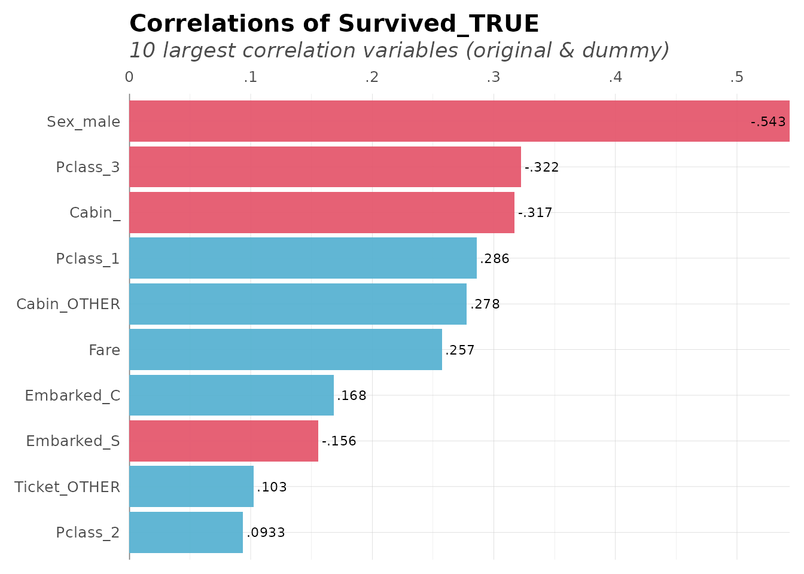
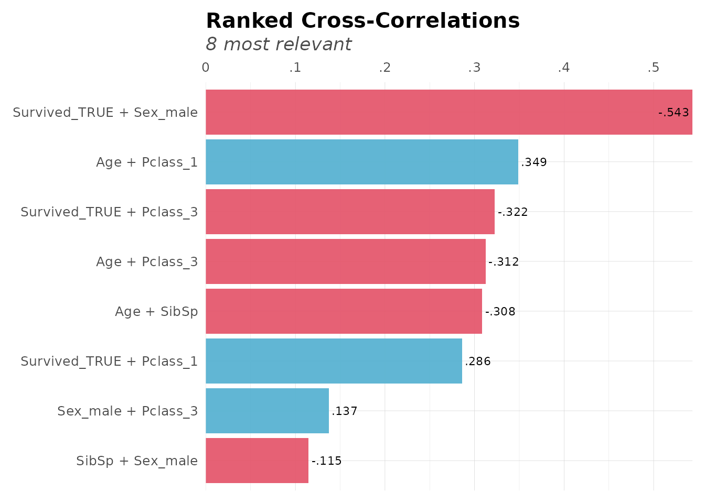
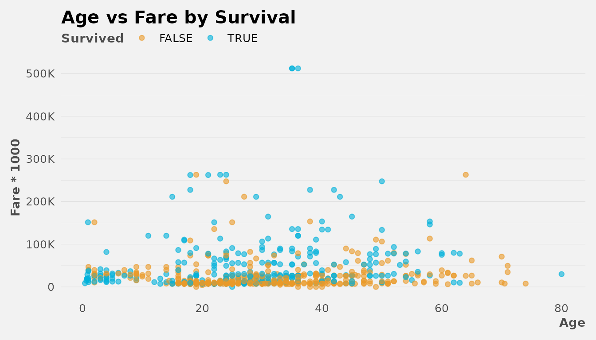
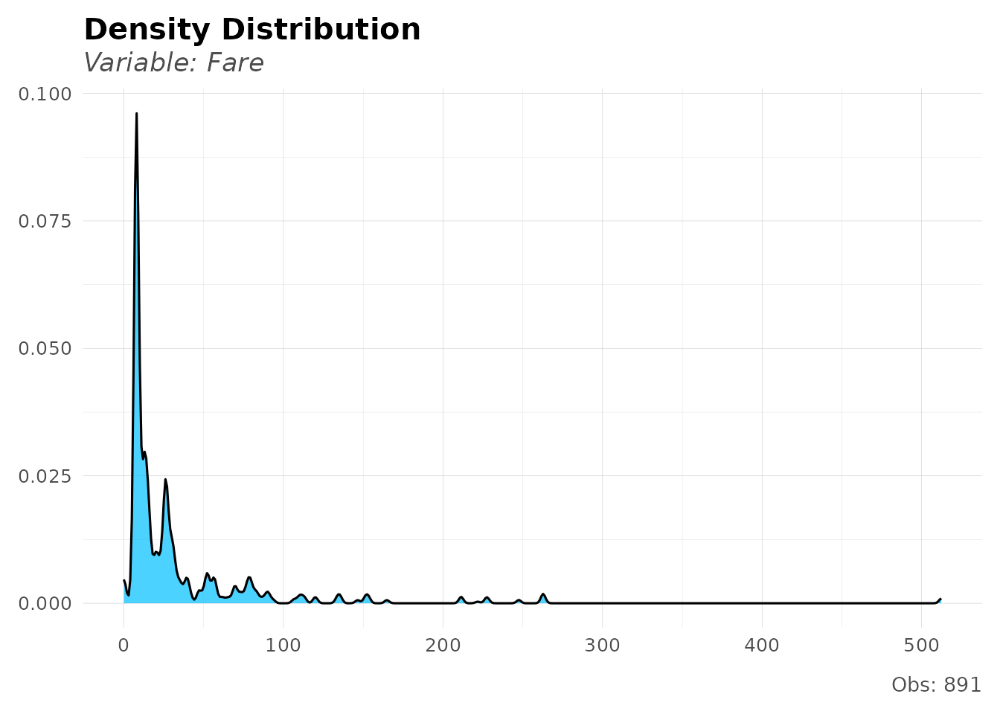
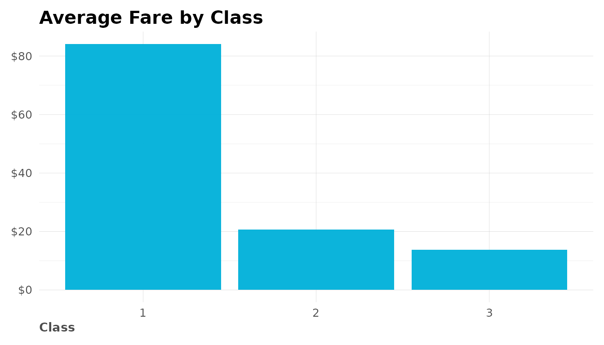
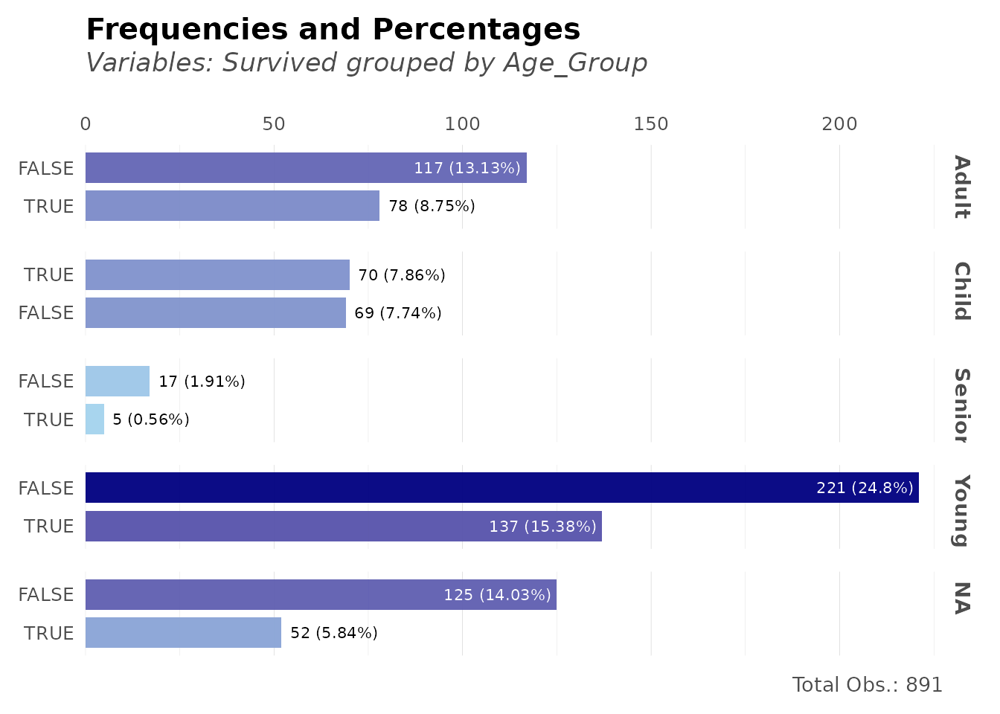
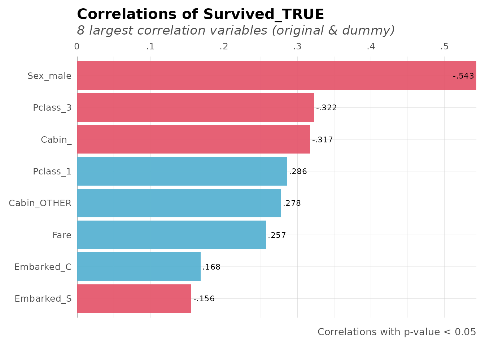

Data Wrangling & Visualization
Bernardo Lares
2026-01-19
Source:vignettes/data-wrangling.Rmd
data-wrangling.RmdInstall and Load
Install lares from CRAN or get the development version
from GitHub. Then, load the package:
Frequency Analysis
Basic Frequencies
The freqs() function provides quick frequency tables
with percentages and cumulative values:
# How many survived?
freqs(dft, Survived)
#> # A tibble: 2 × 5
#> Survived n p order pcum
#> <lgl> <int> <dbl> <int> <dbl>
#> 1 FALSE 549 61.6 1 61.6
#> 2 TRUE 342 38.4 2 100Multi-variable Frequencies
# Survival by passenger class
freqs(dft, Pclass, Survived)
#> # A tibble: 6 × 6
#> Pclass Survived n p order pcum
#> <fct> <lgl> <int> <dbl> <int> <dbl>
#> 1 3 FALSE 372 41.8 1 41.8
#> 2 1 TRUE 136 15.3 2 57.0
#> 3 3 TRUE 119 13.4 3 70.4
#> 4 2 FALSE 97 10.9 4 81.3
#> 5 2 TRUE 87 9.76 5 91.0
#> 6 1 FALSE 80 8.98 6 100Correlation Analysis
Correlation Matrix
Get correlations between all variables (automatically handles categorical variables):
# Correlation matrix of numeric variables
cors <- corr(dft[, 2:5], method = "pearson")
head(cors, 3)
#> Age Survived_TRUE Sex_male Pclass_1 Pclass_2 Pclass_3
#> Age 1.000000 -0.077221 0.093254 0.348941 0.006954 -0.312271
#> Survived_TRUE -0.077221 1.000000 -0.543351 0.285904 0.093349 -0.322308
#> Sex_male 0.093254 -0.543351 1.000000 -0.098013 -0.064746 0.137143Correlate One Variable with All Others
# Which variables correlate most with Survival?
corr_var(dft, Survived, top = 10)
Cross-Correlations
Find the strongest correlations across the entire dataset:
# Top cross-correlations
corr_cross(dft[, 2:6], top = 8)
Data Transformation
Categorical Reduction
Reduce categories in high-cardinality variables:
# Reduce ticket categories (keep top 5, group rest as "other")
dft_reduced <- categ_reducer(dft, Ticket, top = 5)
freqs(dft_reduced, Ticket, top = 10)
#> # A tibble: 6 × 5
#> Ticket n p order pcum
#> <chr> <int> <dbl> <int> <dbl>
#> 1 other 858 96.3 1 96.3
#> 2 1601 7 0.79 2 97.1
#> 3 347082 7 0.79 3 97.9
#> 4 CA. 2343 7 0.79 4 98.7
#> 5 3101295 6 0.67 5 99.3
#> 6 347088 6 0.67 6 100.Date Manipulation
Create date features for time series analysis:
# Create sample dates
dates <- seq(as.Date("2024-01-01"), as.Date("2024-12-31"), by = "day")
# Extract year-month
ym <- year_month(dates[1:5])
ym
#> [1] "2024-01" "2024-01" "2024-01" "2024-01" "2024-01"
# Extract year-quarter
yq <- year_quarter(dates[1:5])
yq
#> [1] "2024-Q1" "2024-Q1" "2024-Q1" "2024-Q1" "2024-Q1"
# Cut dates into quarters
quarters <- date_cuts(dates[c(1, 100, 200, 300)], type = "Q")
quarters
#> [1] "Q1" "Q2" "Q3" "Q4"Visualization with theme_lares
Custom ggplot2 Theme
lares includes a clean, professional theme:
library(ggplot2)
ggplot(dft, aes(x = Age, y = Fare * 1000, color = Survived)) +
geom_point(alpha = 0.6) +
labs(title = "Age vs Fare by Survival") +
# Customize theme with several available options
theme_lares(legend = "top", grid = "Yy", pal = 2, background = "#f2f2f2") +
# Customize axis scales to look nicer
scale_y_abbr()
Distribution Plots
Visualize distributions quickly:
# Analyze Fare distribution
distr(dft, Fare, breaks = 20)
Number Formatting
Format numbers for better readability:
# Format large numbers
formatNum(c(1234567, 987654.321), decimals = 2)
#> [1] "1,234,567" "987,654.3"
# Abbreviate numbers
num_abbr(c(1500, 2500000, 1.5e9))
#> [1] "1.5K" "2.5M" "1.5B"
# Convert abbreviations back to numbers
num_abbr(c("1.5K", "2.5M", "1.5B"), numeric = TRUE)
#> [1] 1.5e+03 2.5e+06 1.5e+09Custom Scales
Use lares scales for better axis formatting:
df_summary <- dft %>%
group_by(Pclass) %>%
summarize(avg_fare = mean(Fare, na.rm = TRUE), .groups = "drop")
ggplot(df_summary, aes(x = factor(Pclass), y = avg_fare)) +
geom_col(fill = "#00B1DA") +
labs(title = "Average Fare by Class", x = "Class", y = NULL) +
scale_y_dollar() + # Format as currency
theme_lares()
Text and Vector Utilities
Vector to Text
Convert vectors to readable text:
# Simple comma-separated
vector2text(c("apple", "banana", "cherry"))
#> [1] "'apple', 'banana', 'cherry'"
# With "and" before last item
vector2text(c("red", "green", "blue"), and = "and")
#> [1] "red, green, and blue"
# Shorter alias
v2t(LETTERS[1:5])
#> [1] "'A', 'B', 'C', 'D', 'E'"Putting It All Together
Here’s a complete analysis workflow:
library(dplyr)
# 1. Load and prepare data
data(dft)
# 2. Clean and transform
dft_clean <- dft %>%
mutate(Age_Group = cut(Age,
breaks = c(0, 18, 35, 60, 100),
labels = c("Child", "Young", "Adult", "Senior")
))
# 3. Analyze frequencies
freqs(dft_clean, Age_Group, Survived, plot = TRUE)
# 4. Check correlations
corr_var(dft_clean, Survived_TRUE, top = 8, max_pvalue = 0.05)
Further Reading
Package Resources
- Package documentation: https://laresbernardo.github.io/lares/
- GitHub repository: https://github.com/laresbernardo/lares
- Report issues: https://github.com/laresbernardo/lares/issues
Blog Posts & Tutorials
- Find Insights with Ranked Cross-Correlations: DataScience+
- Visualize Monthly Income Distribution and Spend Curve: DataScience+
- All lares articles: Author page on DataScience+
Next Steps
- Explore machine learning with
h2o_automl()(see Machine Learning vignette) - Learn about API integrations with ChatGPT and Gemini (see API Integrations vignette)
- Check individual function documentation:
?freqs,?corr,?theme_lares